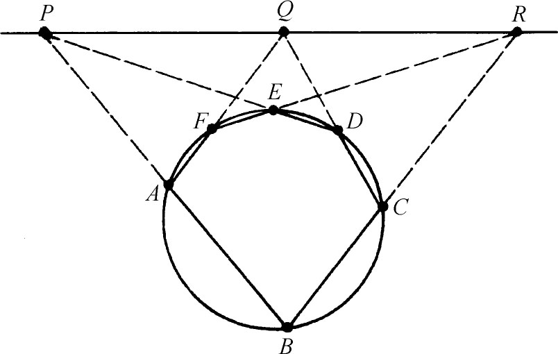
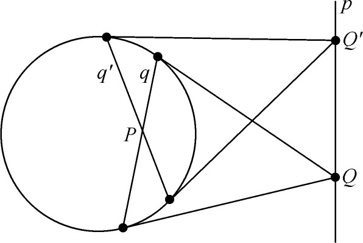

4．帕斯卡和拉伊尔的工作
对射影几何作出贡献的第二个主要人物是帕斯卡（1623—1662）。他生于法国克莱蒙（Clermont），从小多病，并在其短暂的一生中身体一直不好。他的父亲老帕斯卡（Etienne Pascal）本打算不让他在十五六岁以前学数学，因其认为一个孩子在年岁不够大因而不能吸收时不应让他研究一门学科。但帕斯卡在12岁的时候就一定要想知道几何究竟是怎么回事，而一旦人家告诉了他，就自己着手研究。
在帕斯卡八岁时，他家迁到巴黎。早在孩提时，他就同他父亲参加每周一次的“梅森学院”（其后变为自由学院，并于1666年变为科学院）的例会。当时会员中的人有梅森神甫、德萨格、罗贝瓦尔（法兰西学院数学教授）、米道奇（Claude Mydorge，1585—1647）和费马。
帕斯卡把相当多的时间和精力用于研究射影几何。他是微积分的创始人之一，并在这方面对莱布尼茨有所影响。我们也提及过，他也参与了开创概率论的工作。他在19岁的时候就发明了第一架计算机，以帮助他父亲干课税员的工作。他在物理上也有些贡献，如独创一种抽真空的器械，发现空气重量随高度的增加而递减，阐明了液体中的压力概念。他在物理方面的工作是否具有独创性是有人怀疑的，事实上，有些科学史家按照他们的心胸是否宽大而把这看作是普及性工作或剽窃。
帕斯卡在其他许多领域里都有伟大成就。他是法文散文大师，他的《思绪》（Pensées）和《外地短札》（Lettres provinciales）是经典文学作品。他也是出名的神学辩论家。他从童年时期起便想把宗教信仰和数学及科学的理性主义调和起来，而这两方面的兴趣在他一生中都分去了他的精力和时间。他也和笛卡儿一样，相信科学真理必须清楚而分明地符合感性认识或符合理智，或者是这类真理的逻辑推论。他认为在科学和数学问题上不该有故弄玄虚之处。“凡有关信仰之事不能为理智所考虑。”在科学问题上只牵涉到我们的自然思维，权威是无用的，科学知识只能建立在理智的基础上。但信仰的奥秘是感觉和理性所不能察知的，所以必须凭圣经的权威加以接受。他谴责那些在科学上滥用权威以及在神学上使用理智的人。然而信仰的境界比理智更高出一层。
宗教在他24岁以后主宰了他的思想，虽然他仍继续从事数学和科学工作。他认为单纯作为一种乐趣来从事科学工作是错误的。以乐趣为主要目的而搞研究是糟踏了研究，因那样的人怀有“一种对学问的贪欲之心，对知识的无厌嗜求……这种对科学的钻研首先出于以自我为中心的关怀，而不是着眼于在周围一切自然现象中找出神的存在和荣耀。”
他的数学工作主要是凭直观的，他预告了重大的结果，作出了高明的猜测，看出了推理和运算的捷径。在他生命的后期，他把一切真理来源归之于直观。他关于这方面的一些话久已闻名于世。“心有其理，非理之所能知。”“未谙真理者，才发觉需用理智这种迟缓迂回的方法。”“孱弱无能的理智啊，你该有自知之明。”
如果我们可以凭1660年8月10日帕斯卡去世前不久给费马的一封信来作判断的话，可以发现帕斯卡似对数学颇有腻烦之心。他信中写道：“随便谈到数学，我觉得它是对精神的最高锻炼；但同时我又觉得它是那么无用，以致使我觉得一个单纯的数学家同一个普通工匠极少差别。我也觉得它是世界上最可爱的职业，然而仅仅是一种职业；我也常说想［学数学］是件好事，但为此费力则不然。所以我不愿为数学而多走两步，而我想你也会深有同感。”帕斯卡是个多才多艺然而性格矛盾的人。
德萨格敦促帕斯卡研究投射和取截景法，并建议他要把圆锥曲线的许多性质简化为少数几个基本命题作为目标。帕斯卡接受了这些建议。1639年他16岁时就用投射法（即取投射锥和截景）写了关于圆锥曲线的著作。这本著作现已失传，但莱布尼茨确于1676年在巴黎见过，并对帕斯卡的侄甥谈过这作品的内容。有一篇长约8页的《略论圆锥曲线》（Essay on Conics，1640）当时只有少数人知道，旋即失传，直到1779年才重新发现(3)。笛卡儿曾见过1640年的这篇短文，觉得如此出色，竟然不相信它是一个这样年轻的人写的。
帕斯卡在射影几何里的一个最著名的结果（都发表在上述两篇著作中）是现今以他的名字命名的定理。用现代语言叙述，这定理的内容如下：若一六边形内接于一圆锥曲线，则每两条对边相交而得的三点在同一直线上。例如（图14.12）P，Q及R在同一直线上。若六边形的对边两两平行，则P，Q，R将在无穷远线上。

图14.12
关于帕斯卡是怎样证明这定理的，我们只有一些线索。他说由于这对于圆成立，故通过投射和取截景，它必对所有圆锥曲线都成立。显然，若从图形平面外一点作上述图形的投射锥并取一截景，则截景必含一圆锥曲线及其内接六边形。而且这六边形的对边将相交于一直线上的三点，即对应于原图P，Q，R三点的点及PQR线的直线。顺便提一下，关于两直线的每根线上有三点的那个帕普斯定理（第5章第7节）也是上述定理的一个特例。当圆锥曲线退化为两条直线（例如当双曲线退化为它的渐近线时），那就得出帕普斯所说的定理。
帕斯卡定理的逆定理（即若一六边形的三对对边的三个交点共线，则六边形顶点在一圆锥曲线上）也是成立的，但帕斯卡并没有加以考虑。帕斯卡1640年论文中还有其他结果，但不值得在这里多谈。
投射和取截景法也为拉伊尔（1640—1718）所接受。拉伊尔年轻时是个画家，以后转而研究数学和天文。拉伊尔也同帕斯卡一样受了德萨格的影响，并在圆锥曲线方面做了相当多的工作。有些结果发表在1673年和1679年的论文中，是按希腊人的综合方法但采用了新的观点，例如以焦点距离来定义椭圆及双曲线，有些结果应用了笛卡儿和费马的解析几何。他的最大著作是《圆锥曲线》（Sectiones Conicae，1685），这是专门研究射影几何的。
同德萨格和帕斯卡一样，拉伊尔也先证明了牵涉到调和点组的圆的性质，然后通过投射和取截景，把这些性质推到其他圆锥曲线。这样他可以用一种方法把圆的性质推到任一类圆锥曲线上。在拉伊尔的这部1685年的著作中，虽然漏掉了一些材料，如德萨格的对合定理和帕斯卡定理，但几乎包括了现今关于圆锥曲线的所有熟知的性质，并且都用综合方法证明，作出了有系统的陈述。事实上，拉伊尔几乎全部证明了阿波罗尼斯的364个关于圆锥曲线的定理。书中也有关于四边形的调和性质。拉伊尔总共证明了约有300个定理。他打算以此表明投射法比阿波罗尼斯的方法高明，也比当时已经创立的笛卡儿和费马的新的解析方法（第15章）优越。
总的说来，拉伊尔所得结果并未超出德萨格的和帕斯卡的。但在极点和极线理论上他有一个重大的新结果。他证得：若一点在直线上移动，则该点的极线将绕那直线的极点转动。例如，若Q（图14.13）沿直线p移动，则Q的极线绕直线p的极点P转动。

图14.13